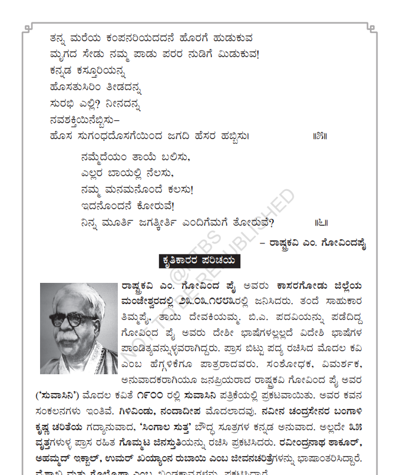
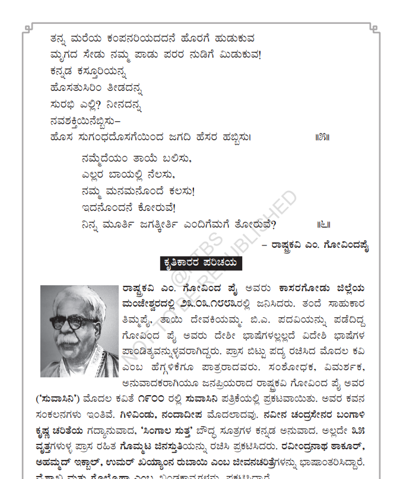

Lets learn about important poems of Karnataka
Poems of Karnataka are vital for preserving the region's cultural heritage and linguistic richness, showcasing the beauty of the Kannada language. They offer historical insights, delve into philosophical and spiritual themes, and have significantly influenced literary traditions. These poems are a form of artistic expression, often serving as social commentary and advocating for change. Integral to festivals and celebrations, they engage the community and keep traditions alive, making them an essential part of Karnataka's identity and legacy.
Kandigara Thayi - People of karnataka's mother

 
